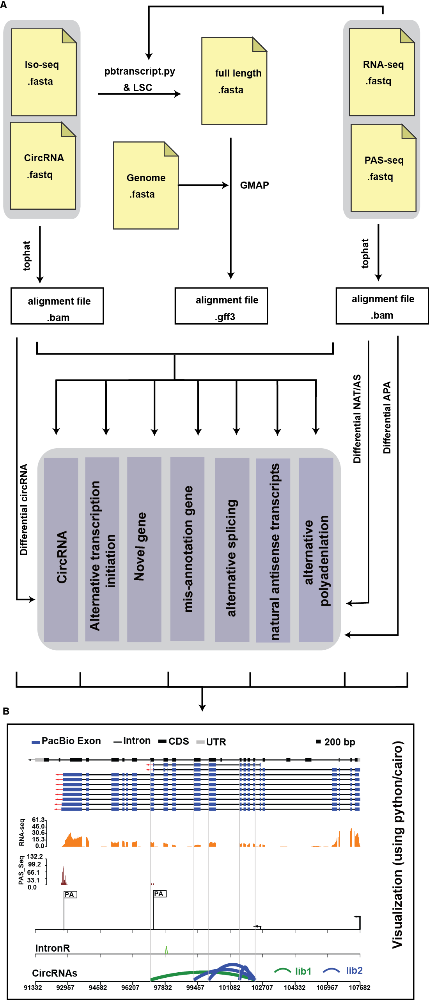

Welcome to use PRAPI
PRAPI is a one-stop solution for Iso-Seq analysis of analyze alternative transcription initiation (ATI), alternative splicing (AS), alternative cleavage and polyadenylation (APA), natural antisense transcripts (NAT), and circular RNAs (circRNAs) comprehensively. PRAPI is capable of combining Iso-Seq full-length isoforms with short read data, such as RNA-Seq or polyadenylation site sequencing (PAS-seq) for differential expression analysis of NAT, AS, APA and circRNAs. Furthermore, PRAPI can annotate new genes and correct mis-annotated genes when gene annotation is available. Finally, PRAPI generates high-quality vector graphics to visualize and highlight the Iso-Seq results.

(A). The workflow of PRAPI for identification and quantitative analysis of post-transcriptional regulation.
(B). Snapshot of post-transcriptional regulation analysis. The top track represents Iso-Seq alignment. The middle track shows the wiggle from RNA-Seq and PAS-seq. The bottom track shows the alternative back-splicing in circRNAs which span the region of AS and APA.
Citing PRAPI:
-
Gao Y, Wang H, Zhang H, Wang Y, Chen J, Gu L, (2017), PRAPI: post-transcriptional regulation analysis pipeline for Iso-Seq.Bioinformatics,Bioinformatics, btx830,https://doi.org/10.1093/bioinformatics/btx830